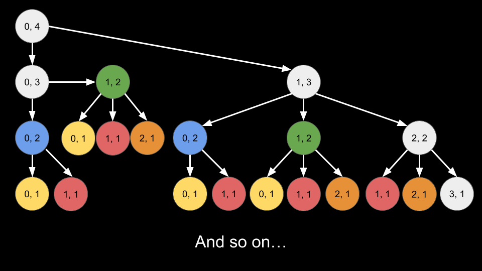
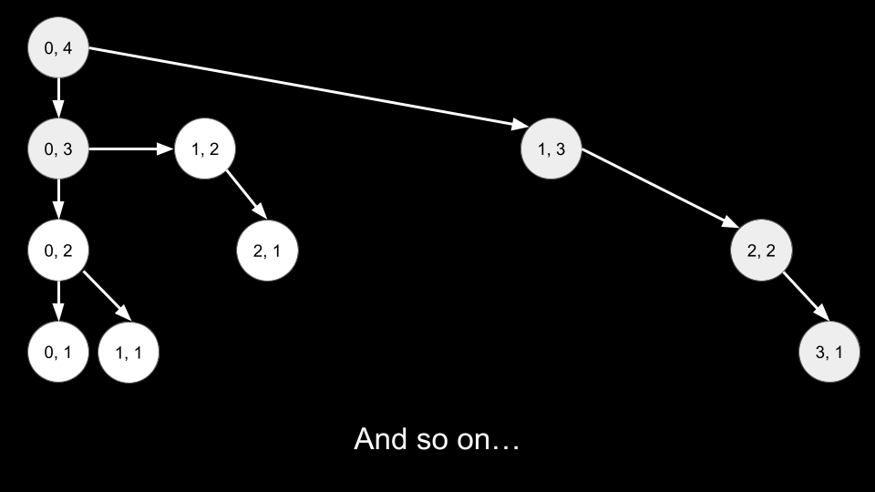

Intuition
Note. For this approach, we assume that you already know the fundamentals of dynamic programming and are figuring out how to apply it to a wide range of problems, such as this one. If you are not yet at this stage, we recommend checking out our relevant Explore Card content on dynamic programming before coming back to this problem.
Let's imagine that we are positioned on a number line. This number line starts at 0 and ends at arrLen
- 1 (since arrLen is 0-indexed). We start at 0 on this number line, and on each
move we are allowed to move left, right, or stay.
We start at 0, need to make steps moves, and want to end up back at 0. Without
loss of generality, let's say we are currently at curr on the number line and need to make
remain more moves. We have three options:
curr and need to make remain - 1 more moves.curr > 0. We move to curr - 1 and need to make
remain - 1 more moves.
curr < arrLen - 1. We move to curr + 1 and need
to make remain - 1 more moves.
Let's define a function dp(curr, remain) that returns the number of ways we can arrive at 0
from curr after remain moves. If we want to go back to 0, we can only do so
through one of these three options. In other words, the number of ways to return to 0 from the current
state is equivalent to the sum of the number of ways to return to 0 in the next three options. We have
the following transitions:
dp(curr, remain) += dp(curr, remain - 1)dp(curr, remain) += dp(curr - 1, remain - 1) if curr > 0dp(curr, remain) += dp(curr + 1, remain - 1) if curr < arrLen - 1>What will be the base case of this function? If remain = 0, we have no more moves to make. If curr
= 0, then we have found a way to accomplish our task, so we return 1. Otherwise, we return
0.
This recursive approach will solve the problem, but will have an exponential time complexity as each call to
dp creates three more calls. Many states of curr, remain will be repeated. In the below
tree, each node represents a call to dp with the first number being curr and the second
one being steps. Nodes with the same color represent the same arguments. With larger values of steps
and arrLen, the tree will quickly grow beyond what we can compute.

To prevent repeated computation, we will memoize the dp function. Using a data structure
memo, the first time we find the answer for a state curr, remain, we will save it in
memo. In the future when we see the same curr, remain state again, we can refer to memo
instead of having to re-calculate. With memoization, the tree now looks like this:

If we want to use a 2D array to implement memo, we must be careful with the sizing. Notice in the
constraints that while steps can be up to 500, arrLen can be up to 10610^6.
However, it is impossible for any call to have a value of curr greater than steps. The
furthest we can go is by only making moves to the right, but we would run out of moves after steps
moves. Thus, we can safely perform arrLen = min(arrLen, steps) before starting the algorithm.
The answer to the original problem is dp(0, steps). We start at 0 and need to make steps
moves.
Algorithm
All arithmetic operations should be done mod 109+710^9 + 7.
dp(curr, remain):
remain == 0:
1 if curr == 0, and 0 otherwise.ans = dp(curr, remain - 1).curr > 0, add dp(curr - 1, remain - 1) to ans.curr < arrLen - 1, add dp(curr + 1, remain - 1) to ans.
ans.arrLen = min(arrLen, steps).dp(0, steps).To memoize dp:
curr, remain has already been calculated using a data structure
memo.
ans, store ans in memo while associating it with curr,
remain.
Implementation
In Python, we use @functools.cache to memoize our function.
Java
class Solution {
int[][] memo;
int MOD = (int) 1e9 + 7;
int arrLen;
public int dp(int curr, int remain) {
if (remain == 0) {
if (curr == 0) {
return 1;
}
return 0;
}
if (memo[curr][remain] != -1) {
return memo[curr][remain];
}
int ans = dp(curr, remain - 1);
if (curr > 0) {
ans = (ans + dp(curr - 1, remain - 1)) % MOD;
}
if (curr < arrLen - 1) {
ans = (ans + dp(curr + 1, remain - 1)) % MOD;
}
memo[curr][remain] = ans;
return ans;
}
public int numWays(int steps, int arrLen) {
arrLen = Math.min(arrLen, steps);
this.arrLen = arrLen;
memo = new int[arrLen][steps + 1];
for (int[] row : memo) {
Arrays.fill(row, -1);
}
return dp(0, steps);
}
}
C++
class Solution {
public:
vector> memo;
int MOD = 1e9 + 7;
int arrLen;
int dp(int curr, int remain) {
if (remain == 0) {
if (curr == 0) {
return 1;
}
return 0;
}
if (memo[curr][remain] != -1) {
return memo[curr][remain];
}
int ans = dp(curr, remain - 1);
if (curr > 0) {
ans = (ans + dp(curr - 1, remain - 1)) % MOD;
}
if (curr < arrLen - 1) {
ans = (ans + dp(curr + 1, remain - 1)) % MOD;
}
memo[curr][remain] = ans;
return ans;
}
int numWays(int steps, int arrLen) {
arrLen = min(arrLen, steps);
this->arrLen = arrLen;
memo = vector(arrLen, vector(steps + 1, -1));
return dp(0, steps);
}
};
Python3
class Solution:
def numWays(self, steps: int, arrLen: int) -> int:
@cache
def dp(curr, remain):
if remain == 0:
if curr == 0:
return 1
return 0
ans = dp(curr, remain - 1)
if curr > 0:
ans = (ans + dp(curr - 1, remain - 1)) % MOD
if curr < arrLen - 1:
ans = (ans + dp(curr + 1, remain - 1)) % MOD
return ans
MOD = 10 ** 9 + 7
return dp(0, steps)
Complexity Analysis
Given nn
as steps and mm as arrLen,
Time complexity: O(n⋅min(n,m))O(n \cdot \min{(n, m)})
There can be steps values of remain and min(steps, arrLen) values of
curr. The reason curr is limited by steps is because if we were to
only move right, we would eventually run out of moves. Thus, there are O(n⋅min(n,m))O(n \cdot \min{(n, m)}) states of
curr, remain. Due to memoization, we never calculate a state more than once. To calculate a
given state costs O(1)O(1) as we are simply
adding up three options.
Space complexity: O(n⋅min(n,m))O(n \cdot \min{(n, m)})
The recursion call stack uses up to O(n)O(n)
space, but this is dominated by memo which has a size of O(n⋅min(n,m))O(n \cdot \min{(n, m)}).
Intuition
The "answer state" is curr = 0, remain = steps. In the previous approach, we started by making a call to
dp(0, steps) and made function calls down to the base case. In this approach, we will start at the base
case and iterate toward the answer state.
To implement this iterative algorithm, we will convert dp from a function to an array. Here, dp[curr][remain]
is analogous to dp(curr, remain) from the previous approach.
First, we need to size dp. The first dimension needs to be the range of curr. As the number
line has a limit of arrLen - 1, the first dimension of dp should have a size of arrLen.
As we mentioned briefly in the previous approach, the value of arrLen can be reduced to min(arrLen,
steps). Larger values of arrLen (greater than steps) are pointless because we
could not reach those states due to running out of steps. The second dimension of dp needs
to be the range of remain. As the maximum value of remain is steps, the
second dimension of dp should have a size of steps + 1. Thus, dp will have a size of
arrLen * (steps + 1) (after we update arrLen = min(arrLen, steps)).
Second, we need to initialize the base case. Assuming dp is initialized with values of 0,
the only non-zero base case is when curr = 0, remain = 0, the answer is 1. Thus, we will
set dp[0][0] = 1.
Third, we need to configure our for-loops. We will use nested for-loops to iterate over all states of curr,
remain. We must iterate starting from the base case. Thus, our first loop will be over remain
starting at 1 and ending at steps. Our second loop will be over curr starting
at arrLen - 1 and ending at 0.
Generally, you want the final loop iteration to calculate the final answer. As our answer state is
curr = 0, remain = steps, we have the loop forremainend atstepsand the loop forcurrend at0.
Finally, each inner loop iteration represents a state curr, remain. We will calculate its value dp[curr][remain]
just like we did in the previous approach by considering the three options:
dp[curr][remain - 1].curr > 0. Add dp[curr - 1][remain - 1].curr < arrLen - 1. Add dp[curr + 1][remain - 1].
The answer to the original problem is dp[0][steps]. We return this value at the end.
Algorithm
All arithmetic operations should be done mod 109+710^9 + 7.
arrLen = min(arrLen, steps).dp[arrLen][steps + 1].dp[0][0] = 1, the base case.remain from 1 to steps:
curr from arrLen - 1 to 0:
ans = dp[curr][remain - 1].curr > 0, add dp[curr - 1][remain - 1] to ans.curr < arrLen - 1, add dp[curr + 1][remain - 1] to
ans.
dp[curr][remain] = ans.dp[0][steps].Implementation
Java
class Solution {
public int numWays(int steps, int arrLen) {
int MOD = (int) 1e9 + 7;
arrLen = Math.min(arrLen, steps);
int[][] dp = new int[arrLen][steps + 1];
dp[0][0] = 1;
for (int remain = 1; remain <= steps; remain++) {
for (int curr = arrLen - 1; curr >= 0; curr--) {
int ans = dp[curr][remain - 1];
if (curr > 0) {
ans = (ans + dp[curr - 1][remain - 1]) % MOD;
}
if (curr < arrLen - 1) {
ans = (ans + dp[curr + 1][remain - 1]) % MOD;
}
dp[curr][remain] = ans;
}
}
return dp[0][steps];
}
}
C++
class Solution {
public:
int numWays(int steps, int arrLen) {
int MOD = 1e9 + 7;
arrLen = min(arrLen, steps);
vector> dp(arrLen, vector(steps + 1, 0));
dp[0][0] = 1;
for (int remain = 1; remain <= steps; remain++) {
for (int curr = arrLen - 1; curr >= 0; curr--) {
int ans = dp[curr][remain - 1];
if (curr > 0) {
ans = (ans + dp[curr - 1][remain - 1]) % MOD;
}
if (curr < arrLen - 1) {
ans = (ans + dp[curr + 1][remain - 1]) % MOD;
}
dp[curr][remain] = ans;
}
}
return dp[0][steps];
}
};
Python3
class Solution:
def numWays(self, steps: int, arrLen: int) -> int:
MOD = 10 ** 9 + 7
arrLen = min(arrLen, steps)
dp = [[0] * (steps + 1) for _ in range(arrLen)]
dp[0][0] = 1
for remain in range(1, steps + 1):
for curr in range(arrLen - 1, -1, -1):
ans = dp[curr][remain - 1]
if curr > 0:
ans = (ans + dp[curr - 1][remain - 1]) % MOD
if curr < arrLen - 1:
ans = (ans + dp[curr + 1][remain - 1]) % MOD
dp[curr][remain] = ans
return dp[0][steps]
Complexity Analysis
Given nn
as steps and mm as arrLen,
Time complexity: O(n⋅min(n,m))O(n \cdot \min{(n, m)})
Our nested for-loops iterate over O(n⋅min(n,m))O(n \cdot \min{(n, m)}) states of curr,
remain. Calculating each state is done in O(1)O(1).
Space complexity: O(n⋅min(n,m))O(n \cdot \min{(n, m)})
dp has a size of O(n⋅min(n,m))O(n \cdot \min{(n, m)}).
Intuition
You may notice that in the previous two approaches, to calculate a state curr, remain, we only needed
states involving remain - 1. For example, if we wanted to calculate dp[4][6], we only
needed values of dp[...][5]. Values stored in dp[...][4], dp[...][3], dp[...][2], etc. are
no longer required.
As we iterate over remain using the outer for-loop, we only need to store values of dp for
the current value of remain and the previous value remain - 1. We will use two arrays of
size arrLen to do this: dp and prevDp.
Here, dp[curr] is analogous to dp[curr][remain] from the previous approach. prevDp[curr]
is analogous to dp[curr][remain - 1] from the previous approach.
As the first value of remain = 1, this means initially, prevDp represents values for remain
= 0. This means we must initialize prevDp[0], as this is our base case curr = 0, remain =
0.
At the beginning of each outer for-loop iteration, we will reset dp. We will then calculate
dp using values from prevDp. Once we have finished calculating dp, we will
update prevDp = dp, so that in the next iteration, prevDp will represent the correct
values.
For example, when remain = 5:
dp[curr] represents dp[curr][5] from the previous approach. We calculate it using
prevDp, where prevDp[curr] represents prevDp[curr][4] from the previous
approach.
dp, the next for-loop iteration has remain = 6, and now
prevDp must represent values of remain = 5.
prevDp = dp, since we just calculated dp to have the values for
remain = 5.
The final value we have in our for-loop over remain is steps. Thus, the final calculated
dp will represent values for remain = steps. We can simply return dp[0],
which represents dp[0][steps] from the previous approach, our answer state.
Algorithm
All arithmetic operations should be done mod 109+710^9 + 7.
arrLen = min(arrLen, steps).dp[arrLen] and an array prevDp[arrLen].prevDp[0] = 1, the base case.remain from 1 to steps:
dp.curr from arrLen - 1 to 0:
ans = prevDp[curr].curr > 0, add prevDp[curr - 1] to ans.curr < arrLen - 1, add prevDp[curr + 1] to ans.
dp[curr] = ans.prevDp = dp.dp[0].Implementation
Java
class Solution {
public int numWays(int steps, int arrLen) {
int MOD = (int) 1e9 + 7;
arrLen = Math.min(arrLen, steps);
int[] dp = new int[arrLen];
int[] prevDp = new int[arrLen];
prevDp[0] = 1;
for (int remain = 1; remain <= steps; remain++) {
dp = new int[arrLen];
for (int curr = arrLen - 1; curr >= 0; curr--) {
int ans = prevDp[curr];
if (curr > 0) {
ans = (ans + prevDp[curr - 1]) % MOD;
}
if (curr < arrLen - 1) {
ans = (ans + prevDp[curr + 1]) % MOD;
}
dp[curr] = ans;
}
prevDp = dp;
}
return dp[0];
}
}
C++
class Solution {
public:
int numWays(int steps, int arrLen) {
int MOD = 1e9 + 7;
arrLen = min(arrLen, steps);
vector dp(arrLen, 0);
vector prevDp(arrLen, 0);
prevDp[0] = 1;
for (int remain = 1; remain <= steps; remain++) {
dp = vector(arrLen, 0);
for (int curr = arrLen - 1; curr >= 0; curr--) {
int ans = prevDp[curr];
if (curr > 0) {
ans = (ans + prevDp[curr - 1]) % MOD;
}
if (curr < arrLen - 1) {
ans = (ans + prevDp[curr + 1]) % MOD;
}
dp[curr] = ans;
}
prevDp = dp;
}
return dp[0];
}
};
Python3
class Solution:
def numWays(self, steps: int, arrLen: int) -> int:
MOD = 10 ** 9 + 7
arrLen = min(arrLen, steps)
dp = [0] * (arrLen)
prevDp = [0] * (arrLen)
prevDp[0] = 1
for remain in range(1, steps + 1):
dp = [0] * (arrLen)
for curr in range(arrLen - 1, -1, -1):
ans = prevDp[curr]
if curr > 0:
ans = (ans + prevDp[curr - 1]) % MOD
if curr < arrLen - 1:
ans = (ans + prevDp[curr + 1]) % MOD
dp[curr] = ans
prevDp = dp
return dp[0]
Complexity Analysis
Given nn
as steps and mm as arrLen,
Time complexity: O(n⋅min(n,m))O(n \cdot \min{(n, m)})
Our nested for-loops iterate over O(n⋅min(n,m))O(n \cdot \min{(n, m)}) states of curr,
remain. Calculating each state is done in O(1)O(1).
Space complexity: O(min(n,m))O(\min{(n, m)})
dp and prevDp have a size of O(min(n,m))O(\min{(n, m)}).